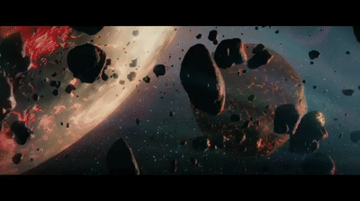

Informacje ogólne
Nazywam się Magda, odkąd pojawiłam się na planecie Ziemia minęło 32 lata. Wylądowałam w Strzelinie. To niewielkie miasteczko położone nieopodal Wrocławia. Moja rodzina pochodzi z odległej galaktyki zwanej Gucziluiwiton, a przybyliśmy tu w ramach międzygalaktycznego eksperymentu. Ziemia nie jest przyjazną planetą, ale mamy tu zadanie do wykonania.
Zainteresowania
Nie samą pracą człowiek żyje, więc od czasu do czasu oddaję się zwykłym ziemskim rozrywkom. Moim ulubionym zajęciem (poza obserwowaniem ludzi) jest oglądanie filmów i seriali, głównie z gatunku thriller/kryminał. Poza miło spędzonym czasem, mogę dowiedzieć się więcej na temat ludzkich umysłów. Jednym z ostatnich oglądanych przeze mnie seriali był Dahmer na platformie Netflix. Jeśli chodzi o filmy to poza w/w gatunkami chętnie sięgam również po filmy katastroficzne. Mój ulubiony film to Everest. Na planecie Gucziluiwiton niestety nie mamy takich ładnych pagórków jak Himalaje. Jeśli chodzi o filmy scince fiction to przyznam, że są średnie. Ludzie w ogóle nie znają się na naszym życiu, co wcale nie dziwi, skoro nigdy nas nie odwiedzili. W wolnym czasie czytam również książki, psychologiczne z racji projektu, nad którym pracuje oraz ulubione thrillery.
| Serial | Gatunek | Gdzie obejrzeć? |
|---|---|---|
| Dahmer | Kryminał, Dramat | Netflix |
| Godzina diabła | Thriller | Prime Video |
| Lucyfer | Kryminał, Fantasy | Netflix |
| Lost | Przygodowy,Thriller | Disney |
| Ty | Thriller | Netflix |
| Jak nas widzą | Dramat | Netflix |
| Breaking Bad | Dramat, Kryminał | Netflix |
Prywatka
Mam córeczkę Maję, która przyleciała na Ziemię prawie 9 lat temu.
Aktualnie uczęszcza do drugiej klasy szkoły podstawowej. Na codzień
zajmuje się obserwacją innych dzieci oraz sporządza odpowiednie
raporty. W wolnym czasie gra w gry na smartfonie. Jej ulubione to
Roblox oraz pkXD.
Mój partner Karol zajmuje się z kolei tropieniem innych przybyszy z
kosmosu, którzy mogliby zagrozić naszej misji.

O misji
Głównym celem misji jest poznanie gatunku ludzkiego oraz życia na planecie Ziemia od wewnątrz. Chcemy dokładnie zrozumieć jak działa ludzka psychika, jak tworzą się nowe technologie oraz jakie emocje towarzyszą ludziom w różnych sytuacjach. Jeśli chciałabyś/chciałbyś pomóc, odpowiedzieć na parę pytań oraz poddać się badaniom, bardzo proszę o kontakt pod adres mailowy podany w stopce. Dla chętnych przewidziane nagrody pieniężne.